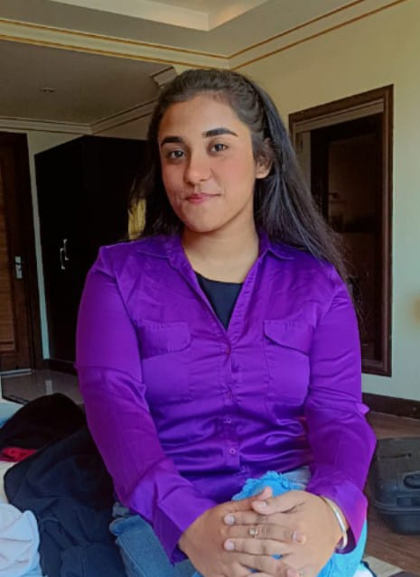

Turning Ideas into Interactive Realities

Welcome to my profile! 🙋♀️
As a passionate engineering student, I thrive on learning, unlearning, and relearning—driven by curiosity and a problem-solving mindset.
🚀 My Journey & Achievements
🔹 Leadership Experience – Served as the Head Girl (2022), where I honed my leadership and teamwork skills, leading initiatives that earned significant recognition.
🔹 Strong Analytical & Mathematical Skills – Won the National Level Abacus Competition (Champion of Champions, 2016), demonstrating my proficiency in problem-solving.
🔹 Hackathon Enthusiast & Team Leader – Actively participate in hackathons, where I thrive as a team leader, fostering collaboration and innovative thinking to build impactful solutions.
🔹 Academics & Beyond – Apart from excelling in technical domains, I actively engage in music, dance, and sports, with a special interest in badminton.
✨ What Drives Me?
I believe in continuous learning and am always open to new challenges, collaborations, and opportunities that allow me to grow and make an impact.
📩 Let's Connect! Feel free to reach out at ayushibhutani15@gmail.com.
Scalable model for image classification using Python, TensorFlow, and Linux.
Large-scale image recognition system using Python, OpenCV, and TensorFlow.
Interactive visualisation of sorting algorithms using JavaScript, HTML, and CSS.
Real-time resource tracking platform using React, Node.js, and MongoDB.
ML & AI Intern — Coincent Organisation (2024)
Contributed to the development of intelligent machine learning models and predictive analytics solutions to support data-driven decision-making.
Collaborated closely with the data science team to design, train, and optimize ML models for real-world applications, including trend analysis, customer behavior prediction, and recommendation systems.
Applied advanced techniques in data preprocessing, feature engineering, and model evaluation using tools such as Python (Scikit-learn, Pandas, NumPy) and TensorFlow/Keras.
Assisted in deploying ML pipelines and integrating models into existing systems, ensuring scalability and performance.
Conducted exploratory data analysis (EDA) to uncover actionable insights, enhancing model accuracy and stakeholder understanding.
2023 – Present | Phagwara, India
2022 – Present | Phagwara, India
{kind=link}